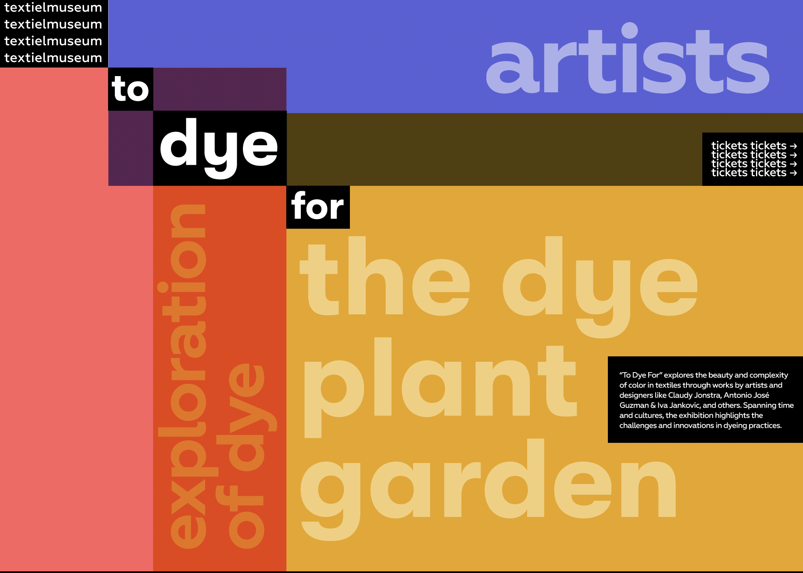
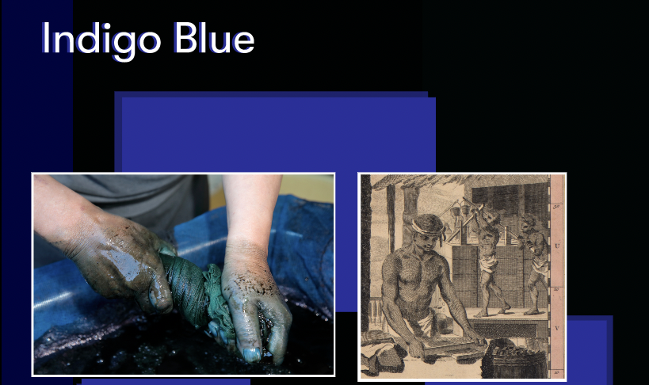
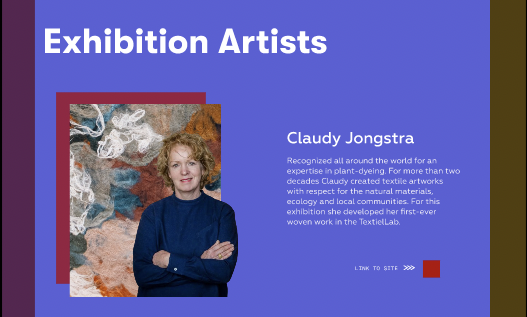
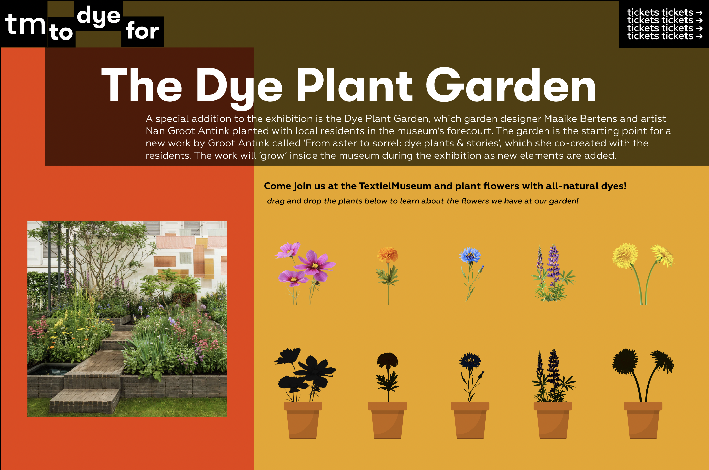
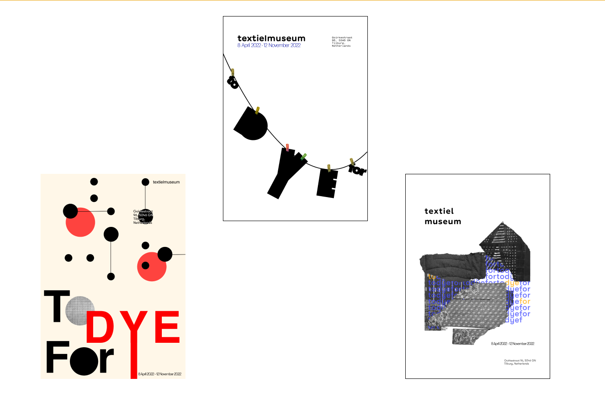
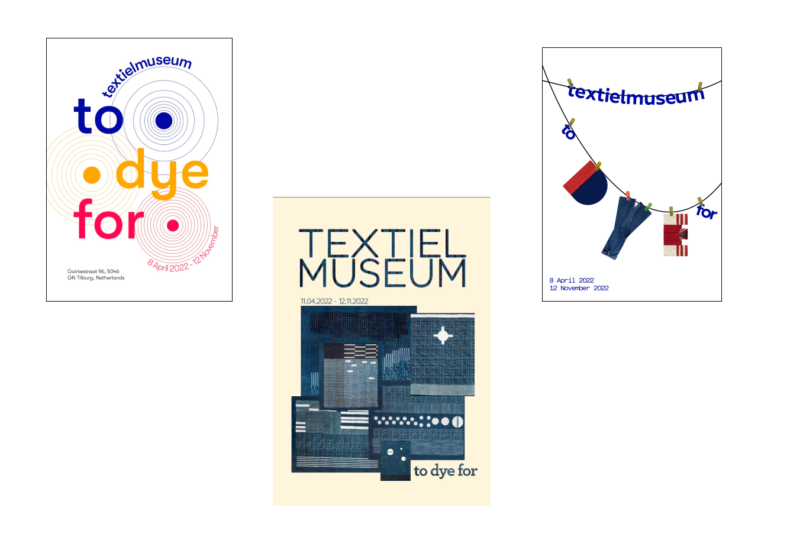
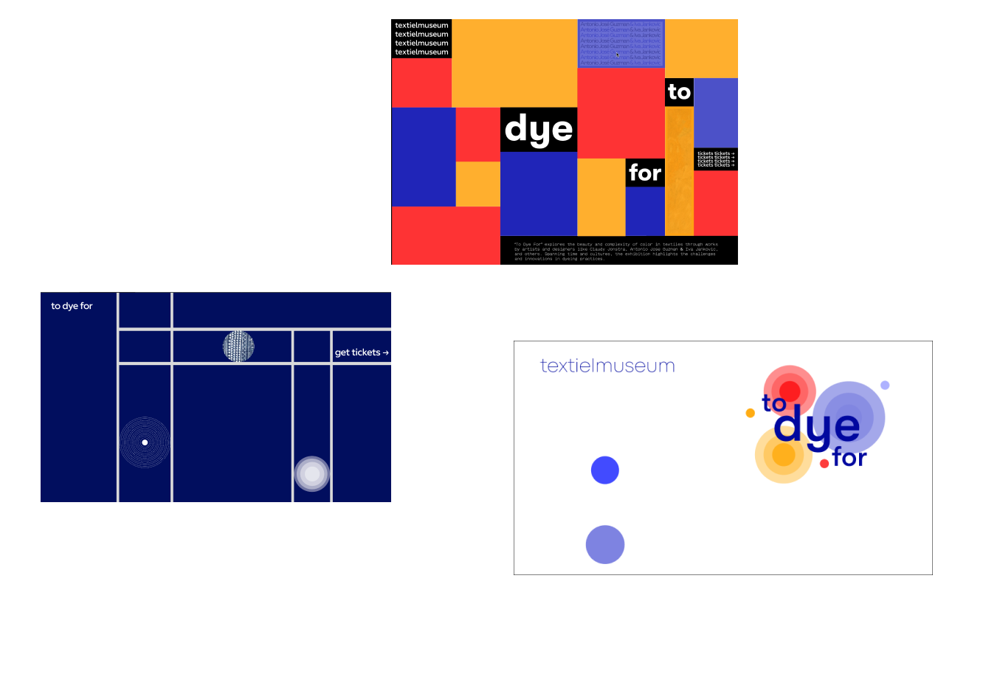

"To Dye For" — Designing the Microsite
Design




Intro
The goal of this project was to translate the To Dye For exhibition by TextielMuseum into a digital microsite that communicates visual identity and narrative. The aim was to create an experience that reflects the material, cultural, and emotional qualities of the exhibition in an intuitive and engaging way.
Research
The process began with visual exploration, where our team researched experimental typography, particularly the work of Wolfgang Weingart. Through poster design, we explored asymmetry, typographic rhythm, and collage to establish a visual language. We also focused on the exhibition itself, identifying key principles such as transforming typography into visual elements, using collage for structure, and applying selective color to guide attention.
At first stage, we familiarized ourselves more with Weingart's qualities such as transforming type and collage, as well understanding the principles and rhythm.
At next stage, revamped our previous iterations and experimented further from given feedback based on the previous week.


Challenges
Some of the most significant problems we faced during this project included integrating a focus on expressiveness and experimentations in typography with usability when moving toward an online presentation. Although the first stage of our visual exploration involved a lot of experimentation with asymmetrical typography and abstract forms, creating an actual microsite needed much more attention to readability, structure, and navigation principles. Moreover, there were difficulties in finding ways to reflect the materiality of the objects exhibited through an interface on a screen, since the physicality of the actual exhibition could not be conveyed through the Internet medium. Lastly, collaborating with other students was quite difficult since integrating different ideas required negotiations.
Microsite
We created multiple wireframes and prototypes to test layout, navigation, and interaction. This iterative process helped us refine a direction that balances expressive visuals with clarity and usability.
Focusing on creating a microsite with a pre-event experience, our microsite introduces the different artists and experiences showcased at the "To Dye For" exhibition. The goal of this microsite is to give the audience a sneak peek at what could be experienced at this exhibition, and to give a little more background information about the history of dye and content that you cannot find at the exhibition itself.


Reflection
This project strengthened my ability to design collaboratively while maintaining a consistent visual direction. I learned to balance creative expression with usability, especially when translating a physical exhibition into a digital experience.
Through research and iteration, I became more confident in making design decisions based on context rather than aesthetics alone. It reinforced my belief that thoughtful design can guide attention and create meaningful experiences.
If I were to approach a similar project again, I would spend more time researching how physical exhibitions translate into digital environments.